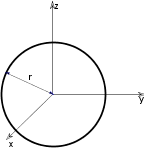
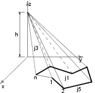

BLOCK
BLOCK a, b, c
BRICK
BRICK a, b, c
The first corner of the block is in the local origin and the edges with lengths a, b and c are along the x-, y- and z-axes, respectively.
Zero values create degenerated blocks (rectangle or line).
a >= 0, b >= 0, c >= 0
a + b + c > 0
CYLIND
CYLIND h, r
Right cylinder, coaxial with the z-axis with a height of h and a radius of r.
If h=0, a circle is generated in the x-y plane.
If r=0, a line is generated along the z axis.
SPHERE
SPHERE r
A sphere with its center at the origin and with a radius of r.

ELLIPS
ELLIPS h, r
Half ellipsoid. Its cross-section in the x-y plane is a circle with a radius of r centered at the origin.
The length of the half axis along the z-axis is h.
CONE
CONE h, r1, r2, alpha1, alpha2
Frustum of a cone where alpha1 and alpha2 are the angles of inclination of the end surfaces to the z axis,
r1 and r2 are the radii of the end-circles and h is the height along the z axis.
If h=0, the values of alpha1 and alpha2 are disregarded and an annulus is generated in the x-y plane.
alpha1 and alpha2 are in degrees.
0 < alpha1 < 180° and 0 < alpha2 < 180°
PRISM
PRISM n, h, x1, y1, ..., xn, yn
Right prism with its base polygon in the x-y plane
(see the parameters of the POLY command and the POLY_ command).
The height along the z-axis is abs(h). Negative h values can also be used. In that case the second base polygon is below the x-y plane.
n >= 3
PRISM_
PRISM_ n, h, x1, y1, s1, ..., xn, yn, sn
Similar to the PRISM command, but any of the horizontal edges and sides can be omitted.
n >= 3
si:
status code that allows you to control the visibility of polygon edges and side surfaces.
You can also define holes and create segments and arcs in the polyline using special constraints.
See Chapter 7, Status Codes for details.
Example 1:
Solid and hollow faces
Example 2:
Holes in the polygon
Example 3:
Curved surface
CPRISM_
CPRISM_ top_material, bottom_material, side_material,
n, h,
x1, y1, s1, ..., xn, yn, sn
Extension of the PRISM_ command. The first three parameters are used for the material name/index of the top, bottom and side surfaces.
The other parameters are the same as above in the PRISM_ command.
n >= 3
See also the section called “Materials”.
si:
status code that allows you to control the visibility of polygon edges and side surfaces.
You can also define holes and create segments and arcs in the polyline using special constraints.
See Chapter 7, Status Codes for details.
Example:
Material referencing a predefined material by name, index and global variable
CPRISM_ "Mtl-Iron", 0, SYMB_MAT,
13, 0.2,
0, 0, 15,
2, 0, 15,
2, 2, 15,
0, 2, 15,
0, 0, -1, !end of the contour
0.2, 0.2, 15,
1.8, 0.2, 15,
1.0, 0.9, 15,
0.2, 0.2, -1, !end of first hole
0.2, 1.8, 15,
1.8, 1.8, 15,
1.0, 1.1, 15,
0.2, 1.8, -1 !end of second holeCPRISM_{2}
CPRISM_{2} top_material, bottom_material, side_material,
n, h,
x1, y1, alpha1, s1, mat1,
...
xn, yn, alphan, sn, matn
CPRISM_{2} is an extension of the CPRISM_ command with the possibility of defining different angles and materials for each side of the prism.
The side angle definition is similar to the one of the CROOF_ command.
alphai: the angle between the face belonging to the edge i of the prism and the plane perpendicular to the base.
mati: material reference that allows you to control the material of the side surfaces.
CPRISM_{3}
CPRISM_{3} top_material, bottom_material, side_material, mask,
n, h,
x1, y1, alpha1, s1, mat1,
...
xn, yn, alphan, sn, matn
CPRISM_{3} is an extension of the CPRISM_{2} command with the possibility of controlling the global behavior of the generated prism.
mask: controls the global behavior of the generated prism.
mask = j1 + 2*j2 + 4*j3 + 8*j4, where each j can be 0 or 1.
j1: top edge in line elimination.
j2: bottom edge in line elimination.
j3: side edge in line elimination.
j4: side edge and surface is smooth in curved sections of the profile. Compatibility: introduced in Archicad 21.
CPRISM_{4}
CPRISM_{4} top_material, bottom_material, side_material, mask,
n, h,
x1, y1, alpha1, s1, mat1,
...
xn, yn, alphan, sn, matn
CPRISM_{4} is an extension of the CPRISM_{3} command
with the possibility of using inline material definition, that means materials defined in GDL script locally
also can be used next to materials defined in global material definitions.
BPRISM_
BPRISM_ top_material, bottom_material, side_material,
n, h, radius,
x1, y1, s1,
...
xn, yn, sn
A smooth curved prism, based on the same data structure as the straight CPRISM_ element. The only additional parameter is radius.
Derived from the corresponding CPRISM_ by bending the x-y plane onto a cylinder tangential to that plane.
Edges along the x axis are transformed to circular arcs; edges along the y axis remain horizontal;
edges along the z axis will be radial in direction.
See the BWALL_ command for details.
si:
status code that allows you to control the visibility of polygon edges and side surfaces.
You can also define holes and create segments and arcs in the polyline using special constraints.
See Chapter 7, Status Codes for details.
Example:
Curved prisms with the corresponding straight ones
FPRISM_
FPRISM_ top_material, bottom_material, side_material, hill_material,
n, thickness, angle, hill_height,
x1, y1, s1,
...
xn, yn, sn
Similar to the PRISM_ command, with the additional hill_material, angle and hill_height parameters
for forming a ramp on the top.
hill_material: the side material of the ramp part.
angle: the inclination angle of the ramp side edges.
Restriction: 0 <= angle < 90.
If angle = 0, the hill side edges seen from an orthogonal view form a quarter circle with the current resolution
(see the RADIUS command, the RESOL command and the TOLER command).
hill_height: the height of the ramp. Note that the thickness parameter represents the whole height of the prism.
si:
status code that allows you to control the visibility of polygon edges and side surfaces.
You can also define holes and create segments and arcs in the polyline using special constraints.
n >= 3, hill_height < thickness
See Chapter 7, Status Codes for details.
Example 1:
Prism with curved ramp
RESOL 10
FPRISM_ "Roof Tile", "Brick-Red", "Brick-White", "Roof Tile",
4, 1.5, 0, 1.0, !angle = 0
0, 0, 15,
5, 0, 15,
5, 4, 15,
0, 4, 15Example 2:
Prism with straight ramp
FPRISM_ "Roof Tile", "Brick-Red", "Brick-White",
"Roof Tile",
10, 2, 45, 1,
0, 0, 15,
6, 0, 15,
6, 5, 15,
0, 5, 15,
0, 0, -1,
1, 2, 15,
4, 2, 15,
4, 4, 15,
1, 4, 15,
1, 2, -1HPRISM_
HPRISM_ top_mat, bottom_mat, side_mat,
hill_mat,
n, thickness, angle, hill_height, status,
x1, y1, s1,
...
xn, yn, sn
Similar to FPRISM_, with an additional parameter controlling the visibility of the hill edges.
status: controls the visibility of the hill edges:
0: hill edges are all visible (FPRISM_)
1: hill edges are invisible
SPRISM_
SPRISM_ top_material, bottom_material, side_material,
n, xb, yb, xe, ye, h, angle,
x1, y1, s1,
...
xn, yn, sn
Extension of the CPRISM_ command, with the possibility of setting the upper polygon non-parallel with the x-y plane.
The upper plane definition is similar to the plane definition of the CROOF_ command.
The height of the prism is defined at the reference line.
Upper and lower polygon intersection is forbidden.
xb, yb, xe, ye: reference line (vector) starting and end coordinates.
angle: rotation angle of the upper polygon around the given oriented reference line in degrees (CCW).
si:
status code that allows you to control the visibility of polygon edges and side surfaces.
You can also define holes and create segments and arcs in the polyline using special constraints.
See Chapter 7, Status Codes for details.
Note
All calculated z coordinates of the upper polygon nodes must be positive or 0.
SPRISM_{2}
SPRISM_{2} top_material, bottom_material, side_material,
n,
xtb, ytb, xte, yte, topz, tangle,
xbb, ybb, xbe, ybe, bottomz, bangle,
x1, y1, s1, mat1,
...
xn, yn, sn, matn
Extension of the SPRISM_ command, with the possibility of having an upper and lower polygon non-parallel with the x-y plane.
The definition of the planes is similar to the plane definition of the CROOF_ command.
The top and bottom of the prism is defined at the reference line. Upper and lower polygon intersection is forbidden.
xtb, ytb, xte, yte: reference line (vector) of the top polygon starting and end coordinates.
topz: the 'z' level of the reference line of the top polygon.
tangle: rotation angle of the top polygon around the given oriented reference line in degrees (CCW).
xbb, ybb, xbe, ybe: reference line (vector) of the bottom polygon starting and end coordinates.
bottomz: the 'z' level of the reference line of the bottom polygon.
bangle: rotation angle of the bottom polygon around the given oriented reference line in degrees (CCW).
si:
status code that allows you to control the visibility of polygon edges and side surfaces.
You can also define holes and create segments and arcs in the polyline using special constraints.
See Chapter 7, Status Codes for details.
mati: material reference that allows you to control the material of the side surfaces.
SPRISM_{3}
SPRISM_{3} top_material, bottom_material, side_material, mask,
n,
xtb, ytb, xte, yte, topz, tangle,
xbb, ybb, xbe, ybe, bottomz, bangle,
x1, y1, s1, mat1,
...
xn, yn, sn, matn
Extension of the SPRISM_{2} command with the possibility of controlling the global behavior of the generated prism.
mask: controls the global behavior of the generated prism.
mask = j1 + 2*j2 + 4*j3 + 8*j4, where each j can be 0 or 1.
j1: top edge in line elimination.
j2: bottom edge in line elimination.
j3: side edge in line elimination.
j4: side edge and surface is smooth in curved sections of the profile. Compatibility: introduced in Archicad 21.
SPRISM_{4}
SPRISM_{4} top_material, bottom_material, side_material, mask,
n,
xtb, ytb, xte, yte, topz, tangle,
xbb, ybb, xbe, ybe, bottomz, bangle,
x1, y1, s1, mat1,
...
xn, yn, sn, matn
SPRISM_{4} is an extension of the SPRISM_{3} command
with the possibility of using inline material definition, that means materials defined in GDL script locally
also can be used next to materials defined in global material definitions.
SLAB
SLAB n, h, x1, y1, z1, ..., xn, yn, zn
Oblique prism. The lateral faces are always perpendicular to the x-y plane.
Its bases are flat polygons rotated about an axis parallel with the x-y plane.
Negative h values can also be used. In that case the second base polygon is below the given one.
No check is made as to whether the points are really on a plane. Apices not lying on a plane will result in strange shadings/ renderings.
n >= 3
SLAB_
SLAB_ n, h, x1, y1, z1, s1, ..., xn, yn, zn, sn
Similar to the SLAB command, but any of the edges and faces of the side polygons can be omitted.
This statement is an analogy of the PRISM_ command.
si:
status code that allows you to control the visibility of polygon edges and side surfaces.
You can also define holes and create segments and arcs in the polyline using special constraints.
See Chapter 7, Status Codes for details.
CSLAB_
CSLAB_ top_material, bottom_material, side_material,
n, h,
x1, y1, z1, s1, ..., xn, yn, zn, sn
Extension of the SLAB_ command; the first three parameters are used for the material name/index of the top, bottom and side surfaces.
The other parameters are the same as above in the SLAB_ command.
si:
status code that allows you to control the visibility of polygon edges and side surfaces.
You can also define holes and create segments and arcs in the polyline using special constraints.
See Chapter 7, Status Codes for details.
CWALL_
CWALL_ left_material, right_material, side_material,
height, x1, x2, x3, x4, t,
mask1, mask2, mask3, mask4,
n,
x_start1, y_low1, x_end1, y_high1, frame_shown1,
...
x_startn, y_lown, x_endn, y_highn, frame_shownn,
m,
a1, b1, c1, d1,
...
am, bm, cm, dm
Left_material, right_material, side_material: Material names/indices for the left, right and side surfaces. (The left and right sides of the wall follow the x axis.)
The reference line of the wall is always transformed to coincide with the x axis. The sides of the wall are in the x-z plane.
height: The height of the wall relative to its base.
x1, x2, x3, x4:
The projected endpoints of the wall lying on the x-y plane as seen below.
If the wall stands on its own, then x1 = x4 = 0, x2 = x3 = the length of the wall.
t: the thickness of the wall.
t < 0: if the body of the wall is to the right of the x axis,
t > 0: if the body of the wall is to the left of the x axis,
t = 0: if the wall is represented by a polygon and frames are generated around the holes.
mask1, mask2, mask3, mask4:
Control the visibility of edges and side polygons.
mask1, mask2, mask3, mask4 = j1 + 2*j2 + 4*j3 + 8*j4, where each j can be 0 or 1.
The j1, j2, j3 bits represent whether the edges of the side polygon are present (1) or omitted (0).
The j4 bit represents whether edges on the side polygon arisen from cut are present (1) or omitted (0).
n: the number of openings in the wall.
x_starti, y_lowi, x_endi, y_highi: coordinates of the openings as shown below.
frame_showni:
1: if the edges of the hole are visible,
0: if the edges of the hole are invisible,
< 0:
control the visibility of each of the opening’s edges separately: frame_showni = -(1*j1 + 2*j2 + 4*j3 + 8*j4 + 16*j5 + 32*j6 + 64*j7 + 128*j8), where j1, j2, ..., j8 can be either 0 or 1.
The numbers j1 to j4 control the visibility of the edges of the hole on the left-hand side of the wall surface,
while j5 to j8 affect the edges on the right-hand side, as shown on the illustration below.
An edge that is perpendicular to the surface of the wall is visible if there are visible edges drawn from both of its endpoints.
m: the number of cutting planes.
ai, bi, ci, di:
coefficients of the equation defining the cutting plane [ai*x + bi*y + ci*z = di].
Parts on the positive side of the cutting plane (i.e., ai*x + bi*y + ci*z > di) will be cut and removed
BWALL_
BWALL_ left_material, right_material, side_material,
height, x1, x2, x3, x4, t, radius,
mask1, mask2, mask3, mask4,
n,
x_start1, y_low1, x_end1, y_high1, frame_shown1,
...
x_startn, y_lown, x_endn, y_highn, frame_shownn,
m,
a1, b1, c1, d1,
...
am, bm, cm, dm
A smooth curved wall based on the same data structure as the straight wall CWALL_ element. The only additional parameter is radius.
Derived from the corresponding CWALL_ by bending the x-z plane onto a cylinder tangential to that plane.
Edges along the x axis are transformed to circular arcs, edges along the y axis will be radial in direction, and vertical edges remain vertical.
The curvature is approximated by a number of segments set by the current resolution
(see the RADIUS command, the RESOL command and the TOLER command).
See also the CWALL_ command for details.
Example 1:
a BWALL_ and the corresponding CWALL_
XWALL_
XWALL_ left_material, right_material, vertical_material, horizontal_material,
height, x1, x2, x3, x4,
y1, y2, y3, y4,
t, radius,
log_height, log_offset,
mask1, mask2, mask3, mask4,
n,
x_start1, y_low1, x_end1, y_high1,
frame_shown1,
...
x_startn, y_lown, x_endn, y_highn,
frame_shownn,
m,
a1, b1, c1, d1,
...
am, bm, cm, dm,
status
Extended wall definition based on the same data structure as the BWALL_ element.
vertical_material, horizontal_material: name or index of the vertical/horizontal side materials.
y1, y2, y3, y4: the projected endpoints of the wall lying in the x-y plane as seen below.
log_height, log_offset: additional parameters allowing you to compose a wall from logs. Effective only for straight walls.
status: controls the behavior of log walls
status = j1 + 2*j2 + 4*j3 + 32*j6 + 64*j7 + 128*j8 + 256*j9, where each j can be 0 or 1.
j1: apply right side material on horizontal edges,
j2: apply left side material on horizontal edges,
j3: start with half log,
j6: align texture to wall edges,
j7: double radius on bended side,
j8: square log on the right side,
j9: square log on the left side.
Example:
XWALL_ "Surf-White", "Surf-White", "Surf-White", "Surf-White",
3.0,
0.0, 4.0, 4.0, 0.0,
0.0, 0.0, 0.3, 1.2,
1.2, 0.0,
0.0, 0.0,
15, 15, 15, 15,
3,
0.25, 0.0, 1.25, 2.5, -255,
1.25, 1.5, 2.25, 2.5, -255,
2.25, 0.5, 3.25, 2.5, -255, 0XWALL_{2}
XWALL_{2} left_material, right_material, vertical_material, horizontal_material,
height, x1, x2, x3, x4,
y1, y2, y3, y4,
t, radius,
log_height, log_offset,
mask1, mask2, mask3, mask4,
n,
x_start1, y_low1, x_end1, y_high1,
sill_depth1, frame_shown1,
...
x_startn, y_lown, x_endn, y_highn,
sill_depthn, frame_shownn,
m,
a1, b1, c1, d1,
...
am, bm, cm, dm,
status
Extended wall definition based on the same data structure as the XWALL_ element.
silldepthi:
logical depth of the opening sill. If the j9 bit of the frame_showni parameter is set,
the wall side materials wraps the hole polygons, silldepthi defining the separator line between them.
frame_showni:
1: if the edges of the hole are visible,
0: if the edges of the hole are invisible,
< 0:
control the visibility of each of the opening’s edges separately:
frame_showni = -(1*j1 + 2*j2 + 4*j3 + 8*j4 + 16*j5 + 32*j6 + 64*j7 + 128*j8 + 256*j9 + 512*j10), where j1, j2, ..., j10 can be either 0 or 1.
There are two additional values to control the material wrapping.
The meaning of the j1, j2, ..., j8 values are the same as at the CWALL_ and XWALL_ commands.
The j9 value controls the material of the hole polygons. If j9 is 1, the hole inherits the side materials of the wall.
The j10 value controls the form of the separator line between the hole materials on the upper and lower polygons of the hole in case of a bent wall.
If the j10 value is 1, the separator line will be straight, otherwise curved.
XWALL_{3}
XWALL_{3} left_material, right_material, vertical_material, horizontal_material,
height, x1, x2, x3, x4,
y1, y2, y3, y4,
t, radius,
log_height, log_offset,
mask1, mask2, mask3, mask4,
n,
x_start1, y_low1, x_end1, y_high1,
sill_depth1, frame_shown1,
...
x_startn, y_lown, x_endn, y_highn,
sill_depthn, frame_shownn,
m,
a1, b1, c1, d1,
...
am, bm, cm, dm,
status
XWALL_{3} is an extension of XWALL_{2} command with the possibility of hiding all edges of the log wall.
status: controls the behavior of log walls
status = j1 + 2*j2 + 4*j3 + 32*j6 + 64*j7 + 128*j8 + 256*j9 + 512*j10, where each j can be 0 or 1.
j1: apply right side material on horizontal edges,
j2: apply left side material on horizontal edges,
j3: start with half log,
j6: align texture to wall edges,
j7: double radius on bended side,
j8: square log on the right side,
j9: square log on the left side,
j10: hide all edges of log wall.
Example:
ROTZ 90
xWALL_{2} "C13", "C11", "C12", "C12",
2, 0, 4, 4, 0,
0, 0, 1, 1,
1, 0,
0, 0,
15, 15, 15, 15,
1,
1, 0.9, 3, 2.1, 0.3, -(255 + 256),
0,
0
DEL 1
ADDX 2
xWALL_{2} "C13", "C11", "C12", "C12",
2, 0, 2 * PI, 2 * PI, 0,
0, 0, 1, 1,
1, 2,
0, 0,
15, 15, 15, 15,
1,
1.6, 0.9, 4.6, 2.1, 0.3, -(255 + 256),
0,
0
ADDX 4
xWALL_{2} "C13", "C11", "C12", "C12",
2, 0, 2 * PI, 2 * PI, 0,
0, 0, 1, 1,
1, 2,
0, 0,
15, 15, 15, 15,
1,
1.6, 0.9, 4.6, 2.1, 0.3, -(255 + 256 + 512),
0,
0BEAM
BEAM left_material, right_material, vertical_material,
top_material, bottom_material,
height,
x1, x2, x3, x4,
y1, y2, y3, y4, t,
mask1, mask2, mask3, mask4
Beam definition. Parameters are similar to those of the XWALL_ element.
top_material, bottom_material: top and bottom materials.
Example:
BEAM 1, 1, 1, 1, 1,
0.3,
0.0, 7.0, 7.0, 0.0,
0.0, 0.0, 0.1, 0.1, 0.5,
15, 15, 15, 15CROOF_
CROOF_ top_material, bottom_material, side_material,
n, xb, yb, xe, ye, height, angle, thickness,
x1, y1, alpha1, s1,
...
xn, yn, alphan, sn
A sloped roof pitch with custom angle ridges.
top_material, bottom_material, side_material: name/index of the top, bottom and side material.
n: the number of nodes in the roof polygon.
xb, yb, xe, ye: reference line (vector).
height: the height of the roof at the reference line (lower surface).
angle: the rotation angle of the roof plane around the given oriented reference line in degrees (CCW).
thickness: the thickness of the roof measured perpendicularly to the plane of the roof.
xi, yi: the coordinates of the nodes of the roof’s lower polygon.
alphai:
the angle between the face belonging to the edge i of the roof and the plane perpendicular to the roof plane, -90° < alphai < 90°.
Looking in the direction of the edge of the properly oriented roof polygon, the CCW rotation angle is positive.
The edges of the roof polygon are oriented properly if, in top view, the contour is sequenced CCW and the holes are sequenced CW.
si:
status code that allows you to control the visibility of polygon edges and side surfaces.
You can also define holes and create segments and arcs in the polyline using special constraints.
See Chapter 7, Status Codes for details.
n >= 3
Example 1:
CROOF_ 1, 1, 1, ! materials
9,
0, 0,
1, 0, ! reference line (xb,yb)(xe,ye)
0.0, ! height
-30, ! angle
2.5, ! thickness
0, 0, -60, 15,
10, 0, 0, 15,
10, 20, -30, 15,
0, 20, 0, 15,
0, 0, 0, -1,
2, 5, 0, 15,
8, 5, 0, 15,
5, 15, 0, 15,
2, 5, 0, -1CROOF_{2}
CROOF_{2} top_material, bottom_material, side_material,
n, xb, yb, xe, ye, height, angle, thickness,
x1, y1, alpha1, s1, mat1,
...
xn, yn, alphan, sn, matn
Extension of the CROOF_ command with the possibility of defining different materials for the sides.
mati: material reference that allows you to control the material of the side surfaces.
CROOF_{3}
CROOF_{3} top_material, bottom_material, side_material, mask,
n, xb, yb, xe, ye, height, angle, thickness,
x1, y1, alpha1, s1, mat1,
...
xn, yn, alphan, sn, matn
Extension of the CROOF_{2} command with the possibility of controlling the global behavior of the generated roof.
mask: controls the global behavior of the generated roof.
mask = j1 + 2*j2 + 4*j3 + 8*j4, where each j can be 0 or 1.
j1: top edge in line elimination.
j2: bottom edge in line elimination.
j3: side edge in line elimination.
j4: side edge and surface is smooth in curved sections of the profile. Compatibility: introduced in Archicad 21.
CROOF_{4}
CROOF_{4} top_material, bottom_material, side_material, mask,
n, xb, yb, xe, ye, height, angle, thickness,
x1, y1, alpha1, s1, mat1,
...
xn, yn, alphan, sn, matn
CROOF_{4} is an extension of the CROOF_{3} command
with the possibility of using inline material definition, that means materials defined in GDL script locally
also can be used next to materials defined in global material definitions.
MESH
MESH a, b, m, n, mask,
z11, z12, ..., z1m,
z21, z22, ..., z2m,
...
zn1, zn2, ..., znm
A simple smooth mesh based on a rectangle with an equidistant net.
The sides of the base rectangle are a and b; the m and n points are along the x and y axes respectively; zij is the height of the node.
Masking:
mask:
mask = j1 + 4*j3 + 16*j5 + 32*j6 + 64*j7, where each j can be 0 or 1.
j1: base surface is present,
j3: side surfaces are present,
j5: base and side edges are visible,
j6: top edges are visible,
j7: top edges are visible, top surface is not smooth.
m >= 2, n >= 2
Example 1:
MESH 50, 30, 5, 6, 1+4+16+32+64,
2, 4, 6, 7, 8,
10, 3, 4, 5, 6,
7, 9, 5, 5, 7,
8, 10, 9, 4, 5,
6, 7, 9, 8, 2,
4, 5, 6, 8, 6Example 2:
MESH 90, 100, 12, 8, 1+4+16+32+64,
17,16,15,14,13,12,11,10,10,10,10, 9,
16,14,13,11,10, 9, 9, 9,10,10,12,10,
16,14,12,11, 5, 5, 5, 5, 5,11,12,11,
16,14,12,11, 5, 5, 5, 5, 5,11,12,12,
16,14,12,12, 5, 5, 5, 5, 5,11,12,12,
16,14,12,12, 5, 5, 5, 5, 5,11,13,14,
17,17,15,13,12,12,12,12,12,12,15,15,
17,17,15,13,12,12,12,12,13,13,16,16ARMC
ARMC r1, r2, l, h, d, alpha
A piece of tube starting from another tube; parameters according to the figure (penetration curves are also calculated and drawn).
The alpha value is in degrees.
r1 >= r2 + d
r1 <= l*sin(alpha) - r2*cos(alpha)
ARME
ARME l, r1, r2, h, d
A piece of tube starting from an ellipsoid in the y-z plane;
parameters according to the figure (penetration lines are also calculated and drawn).
r1 >= r2+d
l >= h*sqrt(1-(r2-d)2/r12)
ELBOW
ELBOW r1, alpha, r2
A segmented elbow in the x-z plane. The radius of the arc is r1, the angle is alpha and the radius of the tube segment is r2.
The alpha value is in degrees.
r1 > r2
Shapes Generated from Polylines
These elements let you create complex 3D shapes using a polyline and a built-in rule.
You can rotate, project or translate the given polyline.
The resulting bodies are a generalization of some previously described elements like
PRISM_ and CYLIND.
Shapes generated from a single polyline:
Shapes generated from two polylines:
The first polyline is always in the x-y plane. Points are determined by two coordinates; the third value is the status (see below).
The second polyline (for RULED, SWEEP, TUBE and TUBEA) is a space curve. Apices are determined by three coordinate values.
Shape generated from four polylines:
Shape generated from any number of polylines:
General restrictions for polylines
Adjacent vertices must not be coincident (except RULED).
The polyline must not intersect itself (this is not checked by the program, but hidden line removal and rendering will be incorrect).
The polylines may be either open or closed. In the latter case, the first node must be repeated after the last one of the contour.
Masking
Mask values are used to show or hide characteristic surfaces and/or edges of the 3D shape.
The mask values are specific to each element and you can find a more detailed description in their corresponding sections/chapters.
mask:
mask = j1 + 2*j2 + 4*j3 + 8*j4 + 16*j5 + 32*j6 + 64*j7, where each j can be 0 or 1.
j1, j2, j3, j4 represent whether the surfaces are present (1) or omitted (0).
j5, j6, j7 represent whether the edges are visible (1) or invisible (0).
j1: base surface.
j2: top surface.
j3: side surface.
j4: other side surface.
j5: base edges.
j6: top edges.
j7: cross-section/surface edges are visible, surface is not smooth.
To enable all faces and edges, set mask value to 127.
Status
Status values are used to state whether a given point of the polyline will leave a sharp trace of its rotation path behind.
0: latitudinal arcs/lateral edges starting from the node are all visible.
1: latitudinal arcs/lateral edges starting from the node are used only for showing the contour.
-1: for EXTRUDE only: it marks the end of the enclosing polygon or a hole,
and means that the next node will be the first node of another hole.
Additional status codes allow you to create segments and arcs in the polyline using special constraints.
See the section called “Additional Status Codes” for details.
To create a smooth 3D shape, set all status values to 1. Use status = 0 to create a ridge.
Other values are reserved for future enhancements.
EXTRUDE
EXTRUDE n, dx, dy, dz, mask,
x1, y1, s1,
...
xn, yn, sn
General prism using a polyline base in the x-y plane.
The displacement vector between bases is (dx, dy, dz).
This is a generalization of the PRISM command and the SLAB command.
The base polyline is not necessarily closed, as the lateral edges are not always perpendicular to the x-y plane.
The base polyline may include holes, just like PRISM_. It is possible to control the visibility of the contour edges.
n: the number of polyline nodes.
mask:
controls the existence of the bottom, top and (in case of an open polyline) side polygon.
mask = j1 + 2*j2 + 4*j3 + 16*j5 + 32*j6 + 64*j7 + 128*j8, where each j can be 0 or 1.
j1: base surface is present,
j2: top surface is present,
j3: side (closing) surface is present,
j5: base edges are visible,
j6: top edges are visible.
j7: cross-section edges are visible, surface is articulated,
j8: cross-section edges are sharp, the surface smoothing will stop here in OpenGL and rendering.
si:
status of the lateral edges or marks the end of the polygon or of a hole.
You can also define arcs and segments in the polyline using additional status code values:
0: lateral edge starting from the node is visible,
1: lateral edges starting from the node are used for showing the contour,
-1: marks the end of the enclosing polygon or a hole, and means that the next node will be the first vertex of another hole.
Additional status codes allow you to create segments and arcs in the planar polyline using special constraints.
See the section called “Additional Status Codes” for details.
n > 2
PYRAMID
PYRAMID n, h, mask, x1, y1, s1, ..., xn, yn, sn

Pyramid based on a polyline in the x-y plane. The peak of the pyramid is located at (0, 0, h).
n: number of polyline nodes.
mask:
controls the existence of the bottom and (in the case of an open polyline) side polygon.
mask = j1 + 4*j3 + 16*j5, where each j can be 0 or 1.
j1: base surface is present,
j3: side (closing) surface is present,
j5: base edges are visible.
si: status of the lateral edges.
0: lateral edges starting from the node are all visible,
1: lateral edges starting from the node are used for showing the contour.
Additional status codes allow you to create segments and arcs in the planar polyline using special constraints.
See the section called “Additional Status Codes” for details.
h > 0 and n > 2
REVOLVE
REVOLVE n, alpha, mask, x1, y1, s1, ..., xn, yn, sn
Surface generated by rotating a polyline defined in the x-y plane around the x axis. The profile polyline cannot contain holes.
n: number of polyline nodes.
alpha: rotation angle in degrees
mask:
controls the existence of the bottom, top and (in the case of alpha < 360°) side polygons.
mask = j1 + 2*j2 + 4*j3 + 8*j4 + 16*j5 + 32*j6 + 64*j7 + 128*j8 + 256*j9, where each j can be 0 or 1.
j1: closing disc at first point is present,
j2: closing disc at last point is present,
j3: base closing side (in profile plane) is present,
j4: end closing side (in revolved plane) is present,
j5: base edges (in profile plane) are visible,
j6: end edges (in revolved plane) are visible,
j7: cross-section edges are visible, surface is articulated,
j8: horizontal edge in line elimination,
j9: vertical edge in line elimination.
si: status of the latitudinal arcs.
0: latitudinal arcs starting from the node are all visible,
1: latitudinal arcs starting from the node are used for showing the contour,
2:
when using Archicad or Z-buffer Rendering Engine and setting Smooth Surfaces,
the latitudinal edge belonging to this point defines a break. This solution is equivalent to the definition of additional nodes.
The calculation is performed by the compiler. With other rendering methods, it has the same effect as using 0.
Additional status codes allow you to create segments and arcs in the planar polyline using special constraints.
See the section called “Additional Status Codes” for details.
n >= 2
yi >= 0.0
yi = 0.0 and yi+1 = 0.0 cannot stand at the same time
(i.e., the y value of two neighboring nodes cannot be zero at the same time).
Example 1:
ROTY -90
REVOLVE 22, 360, 1+64,
0, 1.982, 0,
0.093, 2, 0,
0.144, 1.845, 0,
0.220, 1.701, 0,
0.318, 1.571, 0,
0.436, 1.459, 0,
0.617, 1.263, 0,
0.772, 1.045, 0,
0.896, 0.808, 0,
0.987, 0.557, 0,
1.044, 0.296, 0,
1.064, 0.030, 0,
1.167, 0.024, 0,
1.181, 0.056, 0,
1.205, 0.081, 0,
1.236, 0.096, 0,
1.270, 0.1, 0,
1.304, 0.092, 0,
1.333, 0.073, 0,
1.354, 0.045, 0,
1.364, 0.012, 0,
1.564, 0, 0REVOLVE{2}
REVOLVE{2} n, alphaOffset, alpha, mask, sideMat,
x1, y1, s1, mat1, ..., xn, yn, sn, matn
Advanced version of REVOLVE. The profile polygon will always be closed and may have holes.
The start angle and the face materials are controllable.
alphaOffset: rotation start angle.
alpha: rotation angle length in degrees, may be negative.
mask:
controls the existence of the bottom, top and (in the case of alpha < 360°) side polygons.
mask = 4*j3 + 8*j4 + 16*j5 + 32*j6 + 64*j7 + 128*j8 + 256*j9, where each j can be 0 or 1.
j3: base closing side (in profile plane) is present,
j4: end closing side (in revolved plane) is present,
j5: base edges (in profile plane) are visible,
j6: end edges (in revolved plane) are visible,
j7: cross-section edges are visible, surface is articulated,
j8: horizontal edge in line elimination,
j9: vertical edge in line elimination.
sideMat: material of the closing faces.
mati: material of the face generated from the i-th edge.
REVOLVE{3}
REVOLVE{3} n, alphaOffset, alpha, betaOffset, beta, mask, sideMat,
x1, y1, s1, mat1, ..., xn, yn, sn, matn
REVOLVE{3} is an extension of the REVOLVE{2} command with the possibility of defining two snap position.
During the revolution the path of each point of the base polyline is a circular arc, which is approximated by a polyline.
With REVOLVE{3} two snap location can be defined where polyline exactly fits the circle.
With REVOLVE{2} this two snap locations are at the beginning and the end of the revolution.
With REVOLVE{3} the end points are not necessarily on the circle but simply cut at end planes.
betaOffset: Angle defining the first snap location. The defined angle need not be in the range of revolution.
beta: Angle defining the second snap location relative to the first snap location. May be negative. The defined angle need not be in the range of revolution.
REVOLVE{4}
REVOLVE{4} n, alphaOffset, alpha, betaOffset, beta, mask, sideMat,
x1, y1, s1, mat1, ..., xn, yn, sn, matn
REVOLVE{4} is an extension of the REVOLVE{3} command with the possibility of hiding all edges.
mask:
controls the existence of the bottom, top and (in the case of alpha < 360°) side polygons.
mask = 4*j3 + 8*j4 + 16*j5 + 32*j6 + 64*j7 + 128*j8 + 256*j9 + 512*j10 + 1024*j11, where each j can be 0 or 1.
j3: base closing side (in profile plane) is present,
j4: end closing side (in revolved plane) is present,
j5: base edges (in profile plane) are visible,
j6: end edges (in revolved plane) are visible,
j7: cross-section edges are visible, surface is articulated,
j8: horizontal edge in line elimination,
j9: vertical edge in line elimination,
j10: hide all edges of revolve,
j11: side edge and surface is smooth in curved sections of the profile. Compatibility: introduced in Archicad 21.
REVOLVE{5}
REVOLVE{5}n, alphaOffset, alpha, betaOffset, beta, mask, sideMat,
x1, y1, s1, mat1, ..., xn, yn, sn, matn
REVOLVE{5} is an extension of the REVOLVE{4} command
with the possibility of using inline material definition, that means materials defined in GDL script locally
also can be used next to materials defined in global material definitions.
RULED
RULED n, mask,
u1, v1, s1, ..., un, vn, sn,
x1, y1, z1, ..., xn, yn, zn
RULED{2}
RULED{2} n, mask,
u1, v1, s1, ..., un, vn, sn,
x1, y1, z1, ..., xn, yn, zn
RULED is a surface based on a planar curve and a space curve having the same number of nodes. The planar curve polyline cannot have any holes.
Straight segments connect the corresponding nodes of the two polylines.
This is the only GDL element allowing the neighboring nodes to
overlap.
The second version, RULED{2}, checks the direction (clockwise or counterclockwise) in which the points of both the top polygon and
base polygon were defined, and reverses the direction if necessary.
(The original RULED command takes only the base polygon into account, which can lead to errors.)
n: number of polyline nodes in each curve.
ui, vi: coordinates of the planar curve nodes.
xi, yi, zi: coordinates of the space curve nodes.
mask:
controls the existence of the bottom, top and side polygon and the visibility of the edges on the generator polylines.
The side polygon connects the first and last nodes of the curves, if any of them are not closed.
mask = j1 + 2*j2 + 4*j3 + 16*j5 + 32*j6 + 64*j7, where each j can be 0 or 1.
j1: base surface is present,
j2: top surface is present (not effective if the top surface is not planar),
j3: side surface is present (a planar quadrangle or two triangles),
j5: edges on the planar curve are visible,
j6: edges on the space curve are visible,
j7: edges on the surface are visible, surface is not smooth.
si: status of the lateral edges.
0: lateral edges starting from the node are all visible,
1: lateral edges starting from the node are used for showing the contour.
n > 1
RULEDSEGMENTED
RULEDSEGMENTED n, mask,
x11, y11, z11, s1,..., x1n, y1n, z1n, sn,
x21, y21, z21, ..., x2n, y2n, z2n
Compatibility: introduced in Archicad 21.
RULEDSEGMENTED creates a surface based on two arbitrary-shaped polyline in 3D space. The two polylines must consist of the same number of vertices.
It generates a sequence of doubly ruled surfaces, like RULED, but with less restriction on input polylines and with a subdivision of better quality.
Corresponding vertices of the two profiles are connected with straight lines. Corresponding pair of skew segments of the profiles are connected by a doubly ruled surface (mathematically hyperbolic paraboloid), with segmentation in both directions, resulting much smoother renderings and cross-sections.
Conditions of profile polylines:
both are 3D polylines, does not need to be coplanar
each may be closed but, neither may contain holes
each may contain identical vertices, even multiple consecutive ones resulting in fan-shaped surface
if a profile polyline is closed and coplanar, closing polygon can be generated
n: number of polyline nodes in each curve.
x1i, y1i, z1i: 3D positions of vertices on first profile polyline.
x2i, y2i, z2i: 3D positions of vertices on second profile polyline.
mask:
controls the existence of the bottom, top and side polygon and the visibility of the edges on the generator polylines.
The side polygon connects the first and last nodes of the curves, if any of them are not closed.
mask = j1 + 2*j2 + 4*j3 + 16*j5 + 32*j6 + 64*j7, where each j can be 0 or 1.
j1: base surface is present (not effective if the first polyline is not coplanar and j3 is not set),
j2: top surface is present (not effective if the second polyline is not coplanar and j3 is not set),
j3: closing side surface is present (surface on additional segments between the last and first nodes),
j5: edges on the first profile polyline are visible,
j6: edges on the second profile polyline are visible,
j7: edges on the surface are visible, surface is not smooth.
si: status of the generatrices (lateral edges between one node on first profile polyline and corresponding node on second polyline).
0: generatrix is visible,
1: generatrix is used for showing the contour,
2: generatrix visible and defines a break in rendering.
n > 1
Example:
RULEDSEGMENTED 4, 16+32,
0, 0, 0, 2,
1, 0, 0, 2,
1, 1, 0, 2,
1, 1, 1, 2,
0, 0, 1,
0, 1, 1,
0, 1, 2,
1, 2, 2RULEDSEGMENTED{2}
RULEDSEGMENTED{2} top_material, bottom_material,
n, mask, textureMode,
x11, y11, z11, s1, mat1..., x1n, y1n, z1n, sn, matn,
x21, y21, z21, ..., x2n, y2n, z2n
Compatibility: introduced in Archicad 23.
RULEDSEGMENTED{2} is an extension of the RULEDSEGMENTED command with the possibility of controlling the surface attributes of the generated surfaces in segment detail and applying custom texture projection.
Additional parameters:
top_material: surface attribute index of the base surface (if the first polyline is coplanar and j1+j3 are set).
bottom_material: surface attribute index of the top surface (if the second polyline is coplanar and j2+j3 are set).
textureMode: texture projection mode
mati: surface attribute index of generated surface segment i.
Example:
_topMatIndex = 22
_bottomMatIndex = 34
_segmentMatIndex_1 = 55
_segmentMatIndex_2 = 44
RULEDSEGMENTED{2} _topMatIndex, _bottomMatIndex,
4, 1+2+16+32, 0,
0, 0, 0, 2, _segmentMatIndex_1,
1, 0, 0, 2, _segmentMatIndex_2,
1, 1, 0, 2, _segmentMatIndex_1,
0, 1, 0, 2, _segmentMatIndex_2,
1, 0, 1,
1, 1, 1,
0, 1, 1,
0, 0, 1SWEEP
SWEEP n, m, alpha, scale, mask,
u1, v1, s1, ..., un, vn, sn,
x1, y1, z1, ..., xm, ym, zm
Surface generated by a polyline sweeping along a polyline space curve path.
The plane of the polyline follows the path curve. The space curve has to start from the x-y plane.
If this condition is not met, it is moved along the z axis to start on the x-y plane.
The cross-section at point (xi, yi, zi) is perpendicular to the space curve segment between points (xi-1, yi-1, zi-1) and (xi, yi, zi).
SWEEP can be used to model the spout of a teapot and other complex shapes.
n: number of polyline nodes.
alpha: incremental polyline rotation on its own plane, from one path node to the next one.
scale: incremental polyline scale factor, from one path node to the next one.
ui, vi: coordinates of the base polyline nodes.
xi, yi, zi: coordinates of the path curve nodes.
mask: controls the existence of the bottom and top polygons’ surfaces and edges.
mask = j1 + 2*j2 + 4*j3 + 16*j5 + 32*j6 + 64*j7, where each j can be 0 or 1.
j1: base surface is present,
j2: top surface is present,
j3: side surface is present,
j5: base edges are visible,
j6: top edges are visible,
j7: cross-section edges are visible, surface is articulated.
si: status of the lateral edges.
0: lateral edges starting from the node are all visible,
1: lateral edges starting from the node are used for showing the contour.
Additional status codes allow you to create segments and arcs in the planar polyline using special constraints.
See the section called “Additional Status Codes” for details.
n > 1
m > 1
z1 < z2
TUBE
TUBE n, m, mask,
u1, w1, s1,
...
un, wn, sn,
x1, y1, z1, angle1,
...
xm, ym, zm, anglem
Surface generated by a polyline sweeping along a space curve path without distortion of the generating cross-section.
The internal connection surfaces are rotatable in the U-W plane of the
instantaneous U-V-W coordinate system.
V axis: approximates the tangent of the generator curve at the corresponding point.
W axis: perpendicular to the V axis and pointing upward with respect to the local z axis.
U axis: perpendicular to the V and W axes and forms with them a right-hand sided Cartesian coordinate system.
If the V axis is vertical, then the W direction is not correctly defined. The W axis in the previous path node is used for
determining a horizontal direction.
The cross-section polygon of the tube measured at the middle of the path segments is always equal to the base polygon (u1, w1, ..., un, wn).
Section polygons in joints are situated in the bisector plane of the joint segments. The base polygon must be closed.
n: number of the polyline nodes.
m: number of the path nodes.
ui, wi: coordinates of the base polyline nodes.
xi, yi, zi: coordinates of the path curve nodes.
anglei: rotation angle of the cross-section.
mask: controls the existence of the bottom and top polygons’ surfaces and edges.
mask = j1 + 2*j2 + 16*j5 + 32*j6 + 64*j7 + 128*j8 + 512*j10 + 1024*j11 + 2048*j12 + 4096*j13, where each j can be 0 or 1.
j1: base surface is present,
j2: end surface is present,
j5: base edges (at x2, y2, z2) are visible,
j6: end edges (at xm-1, ym-1, zm-1) are visible,
j7: cross-section edges are visible, surface is articulated,
j8: cross-section edges are sharp, the surface smoothing will stop here in OpenGL and rendering,
j10: base edges participate in line elimination (Compatibility: introduced in Archicad 23.),
j11: end edges participate in line elimination (Compatibility: introduced in Archicad 23.),
j12: longitudinal edges (which connect cross sections) participate in line elimination (Compatibility: introduced in Archicad 23.),
j13: edges of cross sections participate in line elimination (Compatibility: introduced in Archicad 23.).
si: status of the lateral edges.
0: lateral edges starting from the node are all visible,
1: lateral edges starting from the node are used for showing the contour.
2:
when using Archicad or Z-buffer Rendering Engine and setting Smooth Surfaces,
the lateral edge belonging to this point defines a break. This solution is equivalent to the definition of additional nodes.
The calculation is performed by the compiler. With other rendering methods, it has the same effect as using 0.
Additional status codes allow you to create segments and arcs in the planar polyline using special constraints.
Note
The path comprises two points more than the number of generated sections.
The first and the last points determine the position in space of the first and the last surfaces belonging to the TUBE.
These points only play a role in determining the normal of the surfaces, they are not actual nodes of the path.
The orientation of the surfaces is the same as that of the surfaces that would be generated at the nodes nearest to the two endpoints,
if the TUBE were continued in the directions indicated by these.
n > 2 and m > 3
Example 1:
TUBE 4, 18, 16+32,
2.0, 0.0, 0,
0.0, 0.0, 0,
0.0, 0.4, 0,
2.0, 0.4, 0,
-1, 0, 0, 0,
0, 0, 0, 0,
4, 0, 0.1, 0,
6, 0, 0.15, 0,
6+4*sin(15), 4 - 4*cos(15), 0.2, 0,
6+4*sin(30), 4 - 4*cos(30), 0.25, 0,
6+4*sin(45), 4 - 4*cos(45), 0.3, 0,
6+4*sin(60), 4 - 4*cos(60), 0.35, 0,
6+4*sin(75), 4 - 4*cos(75), 0.4, 0,
10, 4, 0.45, 0,
6+4*sin(105), 4 - 4*cos(105), 0.5, 0,
6+4*sin(120), 4 - 4*cos(120), 0.55, 0,
6+4*sin(135), 4 - 4*cos(135), 0.6, 0,
6+4*sin(150), 4 - 4*cos(150), 0.65, 0,
6+4*sin(165), 4 - 4*cos(165), 0.7, 0,
6, 8, 0.75, 0,
0, 8, 1, 0,
-1, 8, 1, 0TUBE{2}
TUBE{2} top_material, bottom_material, cut_material,
n, m, mask,
u1, w1, s1, mat1,
...
un, wn, sn, matn,
x1, y1, z1, angle1,
...
xm, ym, zm, anglem
Compatibility: introduced in Archicad 21.
Extended version of the TUBE command:
holes can be defined within the contour base polygon
individual surfaces attribute for top, bottom polygons and cut areas
individual surface attribute for side polygons belonging to the same base polygon edge
top_material: surface of the closing polygon.
bottom_material: surface of the starting polygon.
cut_material: surface of the cut areas.
xi, yi, zi, anglei: same meaning as in
the TUBE command. Path can not contain arcs (segmentation is manual).
mask: controls the existence of the bottom and top polygons’ surfaces and edges.
mask = j1 + 2*j2 + 16*j5 + 32*j6 + 256*j9 + 512*j10 + 1024*j11 + 2048*j12 + 4096*j13, where each j can be 0 or 1.
j1: base surface is present,
j2: end surface is present,
j5: base edges (at x2, y2, z2) are visible,
j6: end edges (at xm-1, ym-1, zm-1) are visible,
j9: side edge and surface is smooth in curved sections of the profile,
j10: base edges participate in line elimination (Compatibility: introduced in Archicad 23.),
j11: end edges participate in line elimination (Compatibility: introduced in Archicad 23.),
j12: longitudinal edges (which connect cross sections) participate in line elimination (Compatibility: introduced in Archicad 23.),
j13: edges of cross sections participate in line elimination (Compatibility: introduced in Archicad 23.).
si: status of the lateral edges.
-1: indicates the last node of a hole within the base polygon (duplicated first node of the hole), or the closing node of the outside polygon in case of a base polygon containing holes. The matn parameter is ignored in these duplicated nodes with status -1,
mati: individual surface of the side polygons belonging to the edge starting from ui, wi node of the base polygon.
Additional status codes allow you to create segments and arcs in the planar polyline using special constraints. Such polygon edges are automatically segmented during processing.
Example:
matEnds1 = 12
matEnds2 = 24
matCut = 15
matOuter = 10
matInner = 13
TUBE{2} matEnds1, matEnds2, matCut,
10, 4, 1 + 2 + 16 + 32,
! outside contour
-0.01, 0.01, 0, matOuter,
-0.01, -0.01, 0, matOuter,
0.01, -0.01, 0, matOuter,
0.01, 0.01, 0, matOuter,
-0.01, 0.01, -1, matOuter,
! hole contour
-0.008, 0.008, 0, matInner,
-0.008, -0.008, 0, matInner,
0.008, -0.008, 0, matInner,
0.008, 0.008, 0, matInner,
-0.008, 0.008, -1, matInner,
! path
0, 0, -1, 45,
0, 0, 0, 45,
0, 0, 1, 45,
0, 0, 2, 45TUBEA
TUBEA n, m, mask,
u1, w1, s1,
...
un, wn, sn,
x1, y1, z1,
...
xm, ym, zm
TUBEA is a surface generated by a polyline sweeping along a space curve path with a different algorithm
than that of the TUBE command.
The section polygon generated in each joint of the path curve is equal with the base polygon (u1, w1, ..., un, wn)
and is situated in the bisector plane of the projections of the joint segments to the local x-y plane.
The base polygon can be opened: in this case the section polygons will be generated to reach the local x-y plane as in the case of REVOLVE surfaces.
The cross section of the tube measured at the middle of the path segments can be different from the base polygon.
Additional status codes allow you to create segments and arcs in the planar polyline using special constraints.
See the section called “Additional Status Codes” for details.
Example:
TUBEA 9, 7, 1 + 2 + 16 + 32,
-1, 1, 0,
0, 2, 0,
0.8, 2, 0,
0.8, 1.6, 0,
0.8001, 1.6, 1,
3.2, 1.6, 0,
3.2, 2, 0,
4, 2, 0,
5, 1, 0,
0, -7, 0,
0, 0, 0,
4, 0, 1,
9, 3, 2.25,
9, 10, 2.25,
14, 10, 2.25,
20, 15, 5COONS
COONS n, m, mask,
x11, y11, z11, ..., x1n, y1n, z1n,
x21, y21, z21, ..., x2n, y2n, z2n,
x31, y31, z31, ..., x3m, y3m, z3m,
x41, y41, z41, ..., x4m, y4m, z4m
A Coons patch generated from four boundary curves.
mask:
mask = 4*j3 + 8*j4 + 16*j5 + 32*j6 + 64*j7, where each j can be 0 or 1.
j3: edges of the 1st boundary (x1, y1, z1) are visible (effective only if j7 is set),
j4: edges of the 2nd boundary (x2, y2, z2) are visible (effective only if j7 is set),
j5: edges of the 3rd boundary (x3, y3, z3) are visible (effective only if j7 is set),
j6: edges of the 4th boundary (x4, y4, z4) are visible (effective only if j7 is set),
j7: edges on surface are visible, surface is not smooth.
In case the edges on the surface are invisible (bit j7 is set to zero),
all boundary edges become visible, with the bits j3-j6 becoming ineffective.
To define boundary edge visibility independent of surface edge visibility, use the COONS{2} command.
The orientation of the boundaries is obligatory: curves 1 and 2 must go from curve 3 towards 4, and curves 3 and 4 must go from curve 1 towards 2. The corner coordinates have to be the same in the respective curves.
n > 1, m > 1
COONS{2}
COONS{2} n, m, mask,
x11, y11, z11, ..., x1n, y1n, z1n,
x21, y21, z21, ..., x2n, y2n, z2n,
x31, y31, z31, ..., x3m, y3m, z3m,
x41, y41, z41, ..., x4m, y4m, z4m
COONS{2} is an extension of the the COONS command with the possibility of setting the visibility of surface and boundary edges independently.
mask:
mask = 4*j3 + 8*j4 + 16*j5 + 32*j6 + 64*j7, where each j can be 0 or 1.
j3: edges of the 1st boundary (x1, y1, z1) are visible,
j4: edges of the 2nd boundary (x2, y2, z2) are visible,
j5: edges of the 3rd boundary (x3, y3, z3) are visible,
j6: edges of the 4th boundary (x4, y4, z4) are visible,
j7: edges on surface are visible, surface is not smooth.
MASS
MASS top_material, bottom_material, side_material,
n, m, mask, h,
x1, y1, z1, s1,
...
xn, yn, zn, sn,
xn+1, yn+1, zn+1, sn+1,
...
xn+m, yn+m, zn+m, sn+m
The equivalent of the shape generated by the Mesh tool in Archicad.
top_material, bottom_material, side_material: name/index of the top, bottom and side materials.
n: the number of nodes in the mass polygon.
m: the number of nodes on the ridges.
h: the height of the skirt (can be negative).
xi, yi, zi: the coordinates of the nodes.
mask:
mask = j1 + 4*j3 + 16*j5 + 32*j6 + 64*j7 + 128*j8, where each j can be 0 or 1.
j1: base surface is present,
j3: side surfaces are present,
j5: base and side edges are visible,
j6: triangulation edges are visible,
j7: triangulation edges are visible, top surface is not smooth,
j8: all ridges will be sharp, but the surface is smooth.
si: similar to
the PRISM_ command.
Additional status codes allow you to create segments and arcs in the planar polyline using special constraints.
See the section called “Additional Status Codes” for details.
n >= 3, m >= 0
MASS{2}
MASS{2} top_material, bottom_material, side_material,
n, m, mask, h,
x1, y1, z1, s1,
...
xn, yn, zn, sn,
xn+1, yn+1, zn+1, sn+1,
...
xn+m, yn+m, zn+m, sn+m
Extension of the MASS command with an additional mask bit and the possibility of hiding all top edges of the mass.
mask:
mask = j1 + 4*j3 + 16*j5 + 32*j6 + 64*j7 + 128*j8 + 256*j9 + 512*j10, where each j can be 0 or 1.
j1: base surface is present,
j3: side surfaces are present,
j5: base and side edges are visible,
j6: top edges are visible,
j7: top edges are visible, top surface is not smooth,
j8: all ridges will be sharp, but the surface is smooth.
j9: edges participate in line elimination.
j10: all top edges will be hidden.
POLYROOF
POLYROOF defaultMat, k, m, n,
offset, thickness, applyContourInsidePivot,
z_1, ..., z_k,
pivotX_1, pivotY_1, pivotMask_1,
roofAngle_11, gableOverhang_11, topMat_11, bottomMat_11,
...
roofAngle_1k, gableOverhang_1k, topMat_1k, bottomMat_1k,
...
pivotX_m, pivotY_m, pivotMask_m,
roofAngle_m1, gableOverhang_m1, topMat_m1, bottomMat_m1,
...
roofAngle_mk, gableOverhang_mk, topMat_mk, bottomMat_mk,
contourX_1, contourY_1, contourMask_1, edgeTrim_1, edgeAngle_1, edgeMat_1,
...
contourX_n, contourY_n, contourMask_n, edgeTrim_n, edgeAngle_n, edgeMat_n
The command creates a possibly multi-level roof in which the geometry is controlled by multiple parameters,
most importantly the roof angles and two polygons: a pivot polygon and a contour polygon. At the pivot polygon, the roof is slanted at the roof angle.
It ascends until it either reaches the height of the next level or until it is eliminated by its sides encountering one another.
It also descends downwards, until it reaches the contour polygon, which cuts off parts of the roof outside of it.
The contour polygon can also be used to cut holes in the roof.
defaultMat:
the numeric index of the "inner" material of the roof.
This material becomes visible at gables and at cut surfaces, e.g., if the roof is cut by a plane.
m: the number of pivot polygon vertices.
n: the number of contour polygon vertices.
offset: an offset for the thickness of the roof.
thickness: the thickness of the roof.
applyContourInsidePivot:
if set to 0, the outer contour polygon is only applied below the pivot polygon plane.
If set to 1, the outer contour polygon is applied both above and below the pivot polygon plane.
The 0 setting may be used to prevent the contour polygon from cutting off gables that lean outwards.
z_i: the Z coordinate of a level.
pivotX_i, pivotY_i: coordinates of the pivot polygon vertices.
pivotMask_i:
0: marks a normal vertex,
-1:
marks the end of the current pivot subpolygon (outer contour or hole).
Data for such a vertex must be a copy of the data for the first vertex of the subpolygon.
A polygon must always be closed with a mask value of -1, even if there are no holes inside it.
roofAngle_i: angle of slant for a pivot edge on a given level. If the angle >= 90, that part of the roof becomes a gable.
gableOverhang_i:
at the sides of a gable, the roof can extend over a lower level of itself.
The amount of this can be controlled by this parameter,
which has effect only on gables (roofAngle >= 90) that are at least on the second level of the roof.
topMat_i, bottomMat_i: the numeric index of the materials for the top and bottom of the roof.
contourX_i, contourY_i: coordinates of the contour polygon vertices.
contourMask_i:
0: marks a normal vertex,
-1:
marks the end of the current contour subpolygon (outer contour or hole).
Data for such a vertex must be a copy of the data for the first vertex of the subpolygon.
A polygon must always be closed with a mask value of -1, even if there are no holes inside it.
edgeTrim_i: specifies the way the edge is trimmed by the contour polygon. Possible values are:
0: Vertical,
1: Perpendicular to roof plane,
2: Horizontal,
3: Custom angle to roof plane.
edgeAngle_i: the custom angle of the edge to the roof plane. It has effect only if edgeTrim is set to 3 (custom angle to roof plane).
edgeMat_i: numeric index of the material at the edge the roof, where the contour cuts it
Example:
POLYROOF "Paint-01",
2, 5, 5,
0, 0.2, 0,
! Start of z values
2.7,
3.2,
! Start of pivot polygon
2, 8, 0,
45, 0, ind(material, "Paint-01"), ind(material, "Paint-01"),
90, 0.5, ind(material, "Paint-01"), ind(material, "Paint-01"),
2, 3, 0,
45, 0, ind(material, "Paint-01"), ind(material, "Paint-01"),
65, 0, ind(material, "Paint-01"), ind(material, "Paint-01"),
10, 3, 0,
45, 0, ind(material, "Paint-01"), ind(material, "Paint-01"),
65, 0, ind(material, "Paint-01"), ind(material, "Paint-01"),
10, 8, 0,
45, 0, ind(material, "Paint-01"), ind(material, "Paint-01"),
65, 0, ind(material, "Paint-01"), ind(material, "Paint-01"),
2, 8, -1,
45, 0, ind(material, "Paint-01"), ind(material, "Paint-01"),
90, 0.5, ind(material, "Paint-01"), ind(material, "Paint-01"),
! Start of contour polygon
1.5, 8.5, 0, 0, 0, ind(material, "Paint-01"),
1.5, 2.5, 0, 0, 0, ind(material, "Paint-01"),
10.5, 2.5, 0, 0, 0, ind(material, "Paint-01"),
10.5, 8.5, 0, 0, 0, ind(material, "Paint-01"),
1.5, 8.5, -1, 0, 0, ind(material, "Paint-01")Output: see Figure 1
POLYROOF{2}
POLYROOF{2} defaultMat, k, m, n,
offset, thickness, totalThickness, applyContourInsidePivot,
z_1, ..., z_k,
pivotX_1, pivotY_1, pivotMask_1,
roofAngle_11, gableOverhang_11, topMat_11, bottomMat_11,
...
roofAngle_1k, gableOverhang_1k, topMat_1k, bottomMat_1k,
...
pivotX_m, pivotY_m, pivotMask_m,
roofAngle_m1, gableOverhang_m1, topMat_m1, bottomMat_m1,
...
roofAngle_mk, gableOverhang_mk, topMat_mk, bottomMat_mk,
contourX_1, contourY_1, contourMask_1, edgeTrim_1, edgeAngle_1, edgeMat_1,
...
contourX_n, contourY_n, contourMask_n, edgeTrim_n, edgeAngle_n, edgeMat_n
POLYROOF{2} is an extension of the POLYROOF command with the possibility of defining the total thickness of the roof.
This parameter should be considered together with offset and thickness, when the generation of a slice of the roof is desirable.
In this case the thickness and the offset should be set to the thickness of the slice and to the distance between the top planes of the slice
and the complete roof respectively.
totalThickness:
the total thickness of the roof.
POLYROOF{3}
POLYROOF{3} defaultMat, mask, k, m, n,
offset, thickness, totalThickness, applyContourInsidePivot,
z_1, ..., z_k,
pivotX_1, pivotY_1, pivotMask_1,
roofAngle_11, gableOverhang_11, topMat_11, bottomMat_11,
...
roofAngle_1k, gableOverhang_1k, topMat_1k, bottomMat_1k,
...
pivotX_m, pivotY_m, pivotMask_m,
roofAngle_m1, gableOverhang_m1, topMat_m1, bottomMat_m1,
...
roofAngle_mk, gableOverhang_mk, topMat_mk, bottomMat_mk,
contourX_1, contourY_1, contourMask_1, edgeTrim_1, edgeAngle_1, edgeMat_1,
...
contourX_n, contourY_n, contourMask_n, edgeTrim_n, edgeAngle_n, edgeMat_n
POLYROOF{3} is an extension of the POLYROOF{2} command with the possibility of controlling the global behavior of the generated roof.
mask: controls the global behavior of the generated roof.
mask = j1 + 2*j2, where each j can be 0 or 1.
j1: edges participate in line elimination.
j2: Make all edges invisible.
POLYROOF{4}
POLYROOF{4} defaultMat, mask, k, m, n,
offset, thickness, totalThickness, applyContourInsidePivot,
z_1, ..., z_k,
pivotX_1, pivotY_1, pivotMask_1,
roofAngle_11, gableOverhang_11, topMat_11, bottomMat_11,
...
roofAngle_1k, gableOverhang_1k, topMat_1k, bottomMat_1k,
...
pivotX_m, pivotY_m, pivotMask_m,
roofAngle_m1, gableOverhang_m1, topMat_m1, bottomMat_m1,
...
roofAngle_mk, gableOverhang_mk, topMat_mk, bottomMat_mk,
contourX_1, contourY_1, contourMask_1, edgeTrim_1, edgeAngle_1, edgeMat_1,
...
contourX_n, contourY_n, contourMask_n, edgeTrim_n, edgeAngle_n, edgeMat_n
POLYROOF{4} is an extension of the POLYROOF{3} command
with the possibility of using inline material definition, that means materials defined in GDL script locally
also can be used next to materials defined in global material definitions.
EXTRUDEDSHELL
EXTRUDEDSHELL topMat, bottomMat, sideMat_1, sideMat_2, sideMat_3, sideMat_4,
defaultMat,
n, offset, thickness, flipped, trimmingBody,
x_tb, y_tb, x_te, y_te, topz, tangle,
x_bb, y_bb, x_be, y_be, bottomz, bangle,
preThickenTran_11, preThickenTran_12, preThickenTran_13, preThickenTran_14,
preThickenTran_21, preThickenTran_22, preThickenTran_23, preThickenTran_24,
preThicakenTran_31, preThickenTran_32, preThickenTran_33, preThickenTran_34,
x_1, y_1, s_1,
...
x_n, y_n, s_n
Surface created by first extruding a polyline, then adding thickness to it.
topMat, bottomMat, sideMat_1, sideMat_2, sideMat_3, sideMat_4: Materials on the top, bottom and four sides of the object.
defaultMat:
the numeric index of the "inner" material of the object.
This material becomes visible at cut surfaces, e.g., if the object is cut by a plane.
n: number of profile base polyline vertices.
offset: an offset for the thickness of the shell. Cannot be negative.
thickness: the thickness of the shell.
flipped:
1: if the shell should be flipped,
0: otherwise.
trimmingBody:
1: if the shell is to be closed for trimming purposes,
0: otherwise.
x_tb, y_tb, x_te, y_te, topz, tangle:
Specify the top plane of the extrusion.
The meaning of the parameters is the same as for
the SPRISM_{2} command.
x_bb, y_bb, x_be, y_be, bottomz, bangle:
Specify the bottom plane of the extrusion.
The meaning of the parameters is the same as for
the SPRISM_{2} command.
preThickenTran_i: a transformation executed before thickening. See
the XFORM command for the meaning of parameters.
x_i, y_i, s_i:
X and Y coordinates and status values for the base profile polyline. See
the EXTRUDE command for details.
The visibility of the sides cannot be controlled with the status.
EXTRUDEDSHELL{2}
EXTRUDEDSHELL{2} topMat, bottomMat, sideMat_1, sideMat_2, sideMat_3, sideMat_4,
defaultMat,
n, status, offset, thickness, flipped, trimmingBody,
x_tb, y_tb, x_te, y_te, topz, tangle,
x_bb, y_bb, x_be, y_be, bottomz, bangle,
preThickenTran_11, preThickenTran_12, preThickenTran_13, preThickenTran_14,
preThickenTran_21, preThickenTran_22, preThickenTran_23, preThickenTran_24,
preThicakenTran_31, preThickenTran_32, preThickenTran_33, preThickenTran_34,
x_1, y_1, s_1,
...
x_n, y_n, s_n
EXTRUDEDSHELL{2} is an extension of the EXTRUDEDSHELL command with the possibility of hiding edges between original and thickened surface.
status: Status bits:
status = j1, where each j can be 0 or 1.
j1: Make edges invisible between original and thickened surface.
Example:
EXTRUDEDSHELL "Paint-02", "Surf-Stucco Yellow",
"Surf-Stucco Yellow", "Surf-Stucco Yellow", "Surf-Stucco Yellow",
"Surf-Stucco Yellow", "Surf-Stucco Yellow",
3, 0.00, 0.30, 0, 0,
! 2 slant planes
0.00, 0.00, 0.00, 1.00, 0.00, 0.00,
0.00, 0.00, 0.00, 1.00, -10.00, 0.00,
! transformation matrix
0.00, 0.00, 1.00, 0.00,
1.00, 0.00, 0.00, 0.00,
0.00, 1.00, 0.00, 0.00,
! profile polyline
2.00, 0.00, 15,
0.00, 2.00, 15,
-2.00, 0.00, 15EXTRUDEDSHELL{3}
EXTRUDEDSHELL{3} topMat, bottomMat, sideMat_1, sideMat_2, sideMat_3, sideMat_4,
defaultMat,
n, status, offset, thickness, flipped, trimmingBody,
x_tb, y_tb, x_te, y_te, topz, tangle,
x_bb, y_bb, x_be, y_be, bottomz, bangle,
preThickenTran_11, preThickenTran_12, preThickenTran_13, preThickenTran_14,
preThickenTran_21, preThickenTran_22, preThickenTran_23, preThickenTran_24,
preThicakenTran_31, preThickenTran_32, preThickenTran_33, preThickenTran_34,
x_1, y_1, s_1,
...
x_n, y_n, s_n
EXTRUDEDSHELL{3} is an extension of the EXTRUDEDSHELL{2} command
with the possibility of using inline material definition, that means materials defined in GDL script locally
also can be used next to materials defined in global material definitions.
REVOLVEDSHELL
REVOLVEDSHELL topMat, bottomMat, sideMat_1, sideMat_2, sideMat_3, sideMat_4,
defaultMat,
n, offset, thickness, flipped, trimmingBody, alphaOffset, alpha,
preThickenTran_11, preThickenTran_12, preThickenTran_13, preThickenTran_14,
preThickenTran_21, preThickenTran_22, preThickenTran_23, preThickenTran_24,
preThickenTran_31, preThickenTran_32, preThickenTran_33, preThickenTran_34,
x_1, y_1, s_1,
...
x_n, y_n, s_n
Surface created by rotating a polyline defined in the x-y plane around the x axis, then adding thickness to it.
topMat, bottomMat, sideMat_1, sideMat_2, sideMat_3, sideMat_4: Materials on the top, bottom and four sides of the object.
defaultMat:
the numeric index of the "inner" material of the object.
This material becomes visible at cut surfaces, e.g., if the object is cut by a plane.
n: number of profile base polyline vertices.
offset: an offset for the thickness of the shell. Cannot be negative.
thickness: the thickness of the shell.
flipped:
1: if the shell should be flipped,
0: otherwise.
trimmingBody:
1: if the shell is to be closed for trimming purposes,
0: otherwise.
alphaOffset: the sweep start angle.
alpha: the sweep angle length in degrees, may be negative.
preThickenTran_i: a transformation executed before thickening. See
the XFORM command for the meaning of parameters.
x_i, y_i, s_i:
X and Y coordinates and status values for the base profile polyline. See
the EXTRUDE command for details.
The visibility of the sides cannot be controlled with the status.
REVOLVEDSHELL{2}
REVOLVEDSHELL{2} topMat, bottomMat, sideMat_1, sideMat_2, sideMat_3, sideMat_4,
defaultMat,
n, status, offset, thickness, flipped, trimmingBody, alphaOffset, alpha,
preThickenTran_11, preThickenTran_12, preThickenTran_13, preThickenTran_14,
preThickenTran_21, preThickenTran_22, preThickenTran_23, preThickenTran_24,
preThickenTran_31, preThickenTran_32, preThickenTran_33, preThickenTran_34,
x_1, y_1, s_1,
...
x_n, y_n, s_n
REVOLVEDSHELL{2} is an extension of the REVOLVEDSHELL command with the possibility of hiding edges of surfaces, and edges between original and thickened surface.
status: Status bits:
status = j1 + 2*j2, where each j can be 0 or 1.
j1: Make edges invisible between original and thickened surface.
j2: Make edges invisible on surfaces.
Example:
REVOLVEDSHELL "Paint-02", "Surf-Stucco Yellow",
"Surf-Stucco Yellow", "Surf-Stucco Yellow", "Surf-Stucco Yellow",
"Surf-Stucco Yellow", "Surf-Stucco Yellow",
2, 0.00, 0.30, 0, 0, 0.00, 270.00,
! transformation matrix
0.00, 0.00, -1.00, 0.00,
0.00, 1.00, 0.00, 0.00,
1.00, 0.00, 0.00, 0.00,
! profile polyline
4.00, 0.00, 2,
0.00, 4.00, 2REVOLVEDSHELL{3}
REVOLVEDSHELL{3} topMat, bottomMat, sideMat_1, sideMat_2, sideMat_3, sideMat_4,
defaultMat,
n, status, offset, thickness, flipped, trimmingBody, alphaOffset, alpha,
preThickenTran_11, preThickenTran_12, preThickenTran_13, preThickenTran_14,
preThickenTran_21, preThickenTran_22, preThickenTran_23, preThickenTran_24,
preThickenTran_31, preThickenTran_32, preThickenTran_33, preThickenTran_34,
x_1, y_1, s_1,
...
x_n, y_n, s_n
REVOLVEDSHELL{3} is an extension of the REVOLVEDSHELL{2} command
with the possibility of using inline material definition, that means materials defined in GDL script locally
also can be used next to materials defined in global material definitions.
REVOLVEDSHELLANGULAR
REVOLVEDSHELLANGULAR topMat, bottomMat,
sideMat_1, sideMat_2, sideMat_3, sideMat_4, defaultMat,
n, offset, thickness, flipped, trimmingBody, alphaOffset, alpha,
segmentationType, nOfSegments,
preThickenTran_11, preThickenTran_12, preThickenTran_13,
preThickenTran_14,
preThickenTran_21, preThickenTran_22, preThickenTran_23,
preThickenTran_24,
preThickenTran_31, preThickenTran_32, preThickenTran_33,
preThickenTran_34,
x_1, y_1, s_1,
...
x_n, y_n, s_n
An angular variant of the REVOLVEDSHELL command. Parameters are the same with the addition of the following extra parameters:
segmentationType: Must be either 1 or 2.
1: means that 360 degrees of revolution is split into nOfSegments segments,
2: means that the actual revolution angle (given by the alpha parameter) is split into nOfSegments segments.
nOfSegments: Number of segments, see segmentationType parameter above.
REVOLVEDSHELLANGULAR{2}
REVOLVEDSHELLANGULAR{2} topMat, bottomMat,
sideMat_1, sideMat_2, sideMat_3, sideMat_4, defaultMat,
n, status, offset, thickness, flipped, trimmingBody, alphaOffset, alpha,
segmentationType, nOfSegments,
preThickenTran_11, preThickenTran_12, preThickenTran_13,
preThickenTran_14,
preThickenTran_21, preThickenTran_22, preThickenTran_23,
preThickenTran_24,
preThickenTran_31, preThickenTran_32, preThickenTran_33,
preThickenTran_34,
x_1, y_1, s_1,
...
x_n, y_n, s_n
REVOLVEDSHELLANGULAR{2} is an extension of the REVOLVEDSHELLANGULAR command with the possibility of hiding edges of surfaces, and edges between original and thickened surface.
status: Status bits:
status = j1 + 2*j2, where each j can be 0 or 1.
j1: Make edges invisible between original and thickened surface.
j2: Make edges invisible on surfaces.
REVOLVEDSHELLANGULAR{3}
REVOLVEDSHELLANGULAR{3} topMat, bottomMat,
sideMat_1, sideMat_2, sideMat_3, sideMat_4, defaultMat,
n, status, offset, thickness, flipped, trimmingBody, alphaOffset, alpha,
segmentationType, nOfSegments,
preThickenTran_11, preThickenTran_12, preThickenTran_13,
preThickenTran_14,
preThickenTran_21, preThickenTran_22, preThickenTran_23,
preThickenTran_24,
preThickenTran_31, preThickenTran_32, preThickenTran_33,
preThickenTran_34,
x_1, y_1, s_1,
...
x_n, y_n, s_n
REVOLVEDSHELLANGULAR{3} is an extension of the REVOLVEDSHELLANGULAR{2} command
with the possibility of using inline material definition, that means materials defined in GDL script locally
also can be used next to materials defined in global material definitions.
RULEDSHELL
RULEDSHELL topMat, bottomMat,
sideMat_1, sideMat_2, sideMat_3, sideMat_4, defaultMat,
n, m, g,
offset, thickness, flipped, trimmingBody,
preThickenTran_11, preThickenTran_12, preThickenTran_13, preThickenTran_14,
preThickenTran_21, preThickenTran_22, preThickenTran_23, preThickenTran_24,
preThickenTran_31, preThickenTran_32, preThickenTran_33, preThickenTran_34,
firstpolyX_1, firstpolyY_1, firstpolyS_1,
...
firstpolyX_n, firstpolyY_n, firstpolyS_n,
secondpolyX_1, secondpolyY_1, secondpolyS_1,
...
secondpolyX_m, secondpolyY_m, secondpolyS_m,
profile2Tran_11, profile2Tran_12, profile2Tran_13, profile2Tran_14
profile2Tran_21, profile2Tran_22, profile2Tran_23, profile2Tran_24
profile2Tran_31, profile2Tran_32, profile2Tran_33, profile2Tran 34
generatrixFirstIndex_1, generatrixSecondIndex_1,
...
generatrixFirstIndex_g, generatrixSecondIndex_g
Surface created by connecting two polylines.
topMat, bottomMat, sideMat_1, sideMat_2, sideMat_3, sideMat_4: Materials on the top, bottom and four sides of the object.
defaultMat:
the numeric index of the "inner" material of the object.
This material becomes visible at cut surfaces, e.g., if the object is cut by a plane.
n: number of vertices for first profile base polyline.
m: number of vertices for second profile base polyline.
g: number of generatrices.
offset: an offset for the thickness of the shell. Cannot be negative.
thickness: thickness of the shell.
flipped:
1: if the shell should be flipped,
0: otherwise
preThickenTran: a transformation executed before thickening. See
the XFORM command for the meaning of parameters.
trimmingBody:
1: if the shell is to be closed for trimming purposes,
0: otherwise
firstpolyX, firstpolyY, firstpolyS:
X and Y coordinates and status values for the first base profile polyline.
See
the REVOLVE command for details.
secondpolyX, secondpolyY, secondpolyS:
X and Y coordinates and status values for the second base profile polyline. See
the REVOLVE command for details.
profile2Tran:
a transformation executed on the second profile.
Use this transformation to position the second profile relative to the first one. See
the XFORM command for the meaning of parameters.
generatrixFirstIndex, generatrixSecondIndex:
pairs of indexes, one from the first polyline and one from the second polyline.
The vertexes with the given indexes will be connected with a line.
RULEDSHELL{2}
RULEDSHELL{2} topMat, bottomMat,
sideMat_1, sideMat_2, sideMat_3, sideMat_4, defaultMat,
n, m, g, status,
offset, thickness, flipped, trimmingBody,
preThickenTran_11, preThickenTran_12, preThickenTran_13, preThickenTran_14,
preThickenTran_21, preThickenTran_22, preThickenTran_23, preThickenTran_24,
preThickenTran_31, preThickenTran_32, preThickenTran_33, preThickenTran_34,
firstpolyX_1, firstpolyY_1, firstpolyS_1,
...
firstpolyX_n, firstpolyY_n, firstpolyS_n,
secondpolyX_1, secondpolyY_1, secondpolyS_1,
...
secondpolyX_m, secondpolyY_m, secondpolyS_m,
profile2Tran_11, profile2Tran_12, profile2Tran_13, profile2Tran_14
profile2Tran_21, profile2Tran_22, profile2Tran_23, profile2Tran_24
profile2Tran_31, profile2Tran_32, profile2Tran_33, profile2Tran 34
generatrixFirstIndex_1, generatrixSecondIndex_1,
...
generatrixFirstIndex_g, generatrixSecondIndex_g
RULEDSHELL{2} is an extension of the RULEDSHELL command with the possibility of hiding edges of surfaces, and edges between original and thickened surface.
status: Status bits:
status = j1 + 2*j2, where each j can be 0 or 1.
j1: Make edges invisible between original and thickened surface.
j2: Make edges invisible on surfaces.
Example:
RULEDSHELL "Paint-14", "Paint-14",
"Paint-14", "Paint-14", "Paint-14", "Paint-14", "Paint-14",
4, 3, 3,
0.00, 0.30, 0, 0,
! transformation matrix
1.00, 0.00, 0.00, 0.00,
0.00, 0.00, -1.00, 0.00,
0.00, 1.00, 0.00, 0.00,
! profile 1 polyline
0.00, 0.00, 2,
2.00, 2.00, 2,
4.00, 0.00, 2,
6.00, 0.00, 2,
! profile 2 polyline
0.00, 0.00, 2,
2.00, 2.00, 2,
6.00, 1.00, 2,
! transformation matrix
1.00, 0.00, 0.00, 0.00,
0.00, 1.00, 0.00, 0.00,
0.00, 0.00, 1.00, -10.00,
! generatrices
1, 1,
2, 2,
4, 3RULEDSHELL{3}
RULEDSHELL{3} topMat, bottomMat,
sideMat_1, sideMat_2, sideMat_3, sideMat_4, defaultMat,
n, m, g, status,
offset, thickness, flipped, trimmingBody,
preThickenTran_11, preThickenTran_12, preThickenTran_13, preThickenTran_14,
preThickenTran_21, preThickenTran_22, preThickenTran_23, preThickenTran_24,
preThickenTran_31, preThickenTran_32, preThickenTran_33, preThickenTran_34,
firstpolyX_1, firstpolyY_1, firstpolyS_1,
...
firstpolyX_n, firstpolyY_n, firstpolyS_n,
secondpolyX_1, secondpolyY_1, secondpolyS_1,
...
secondpolyX_m, secondpolyY_m, secondpolyS_m,
profile2Tran_11, profile2Tran_12, profile2Tran_13, profile2Tran_14
profile2Tran_21, profile2Tran_22, profile2Tran_23, profile2Tran_24
profile2Tran_31, profile2Tran_32, profile2Tran_33, profile2Tran 34
generatrixFirstIndex_1, generatrixSecondIndex_1,
...
generatrixFirstIndex_g, generatrixSecondIndex_g
RULEDSHELL{3} is an extension of the RULEDSHELL{2} command
with the possibility of using inline material definition, that means materials defined in GDL script locally
also can be used next to materials defined in global material definitions.